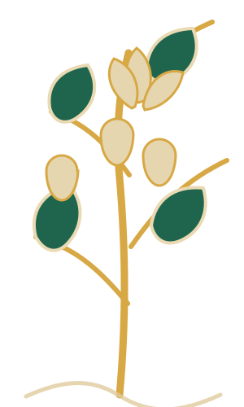
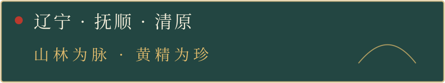

视频暂时无法加载，请稍后重试。
01 / 清原采挖影像
一株黄精的山林旅程
清原满族自治县采挖画面与黄精根茎影像。
图像识别 · 2.5D 山林互动
开启相机，将镜头对准清原山序黄精果礼盒正面主视觉。


清原山序 · 礼盒图像识别
让礼盒正面的山林，目标图礼盒正面高清图案 互动方式图像识别 + 2.5D 动态图层
相机或识别不可用？进入清原山林沉浸模式清原山林意象 · 数字视觉演绎
以礼盒上的山脉、林木与黄精植物为线索，进入一场由包装图形延展而来的沉浸式故事。
设计演绎 · 非清原产地实景从包装图形出发
山形轮廓、森林剪影与黄精植物层叠出现，呼应清原山序礼盒的版画语言。这里展示的是设计演绎；如需呈现清原产地实景，将在企业提供真实拍摄素材后更新。
黄精生长故事 · 企业影像资料
从清原山林，到一盒黄精果。
观看企业公开影像中的清原采挖与黄精加工画面。视频点击后播放，默认静音。
清原满族自治县采挖画面与黄精根茎影像。
黄精原料、企业加工环节与相关产品画面。
影像素材整理自“裕恒源黄精”官方公开视频，用于本包装设计的数字互动展示。
涉及具体生产批次、工艺参数及产品信息，以企业最终确认内容为准；视频不代表本批次产品溯源。